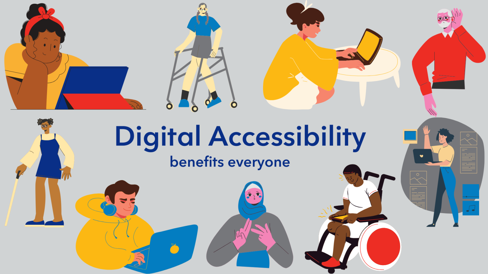

O que é a Cegueira?
A cegueira vai muito além da total ausência de percepção visual. Ela é uma condição complexa que impacta a forma como os indivíduos coletam informações do mundo ao seu redor, dependendo de outros sentidos como a audição, o tato e o olfato para mapear a realidade geográfica e social.

Cientificamente, ela pode ser caracterizada como a perda total ou parcial da capacidade de enxergar, decorrente de fatores congênitos (quando o indivíduo já nasce com a condição devido a problemas genéticos ou infecções gestacionais) ou adquiridos ao longo da vida (causados por traumas, acidentes ou patologias crônicas).
Entender a cegueira sob a perspectiva social significa compreender que a barreira não está na deficiência física do indivíduo, mas sim no design dos ambientes públicos, produtos e sites da internet que não foram projetados de forma universal para abraçar a diversidade humana.
Graus de Deficiência Visual e Causas Comuns
A deficiência visual divide-se em categorias técnicas que determinam o nível de autonomia do paciente e os tipos de recursos de acessibilidade que ele necessitará para interagir com telas digitais:
- Cegueira Total: Ausência completa de visão ou apenas percepção de luz, sem distinção de formas ou direção dos raios luminosos. Requer leitores de tela absolutos ou sistemas em Braille.
- Baixa Visão ou Visão Subnormal: Redução severa que não pode ser totalmente corrigida com óculos comuns, lentes de contato ou cirurgias. Usuários nesta categoria dependem de expansão de fontes, inversão de cores e temas de alto contraste.
As causas mais recurrentes para o desenvolvimento da perda visual na sociedade moderna incluem o Glaucoma (aumento da pressão interna ocular), a Retinopatia Diabética (danos nos vasos sanguíneos da retina causados pelo excesso de glicose), a Catarata (opacidade do cristalino) e a Degeneração Macular Relacionada à Idade (DMRI), que afeta o centro do campo de visão.
Tecnologias Assistivas e UX/HCI
No universo do desenvolvimento web, os conceitos de UX (Experiência do Usuário) e HCI (Interação Humano-Computador) determinam o sucesso da navegação para pessoas com necessidades especiais. Sistemas bem projetados se comunicam perfeitamente com os ecossistemas das tecnologias assistivas.
Os principais softwares utilizados por pessoas cegas são os Leitores de Tela. Eles mapeiam toda a árvore lógica do documento HTML e traduzem o conteúdo escrito em áudio fonético. Para que isso funcione, o programador é obrigado a criar códigos semânticos limpos e descrições detalhadas nas imagens através do atributo alt.
Além disso, o uso correto de espaçamentos tipográficos, paletas de cores balanceadas e a eliminação de efeitos piscantes cansativos evitam a fadiga ocular em pessoas que possuem baixa visão ou visões periféricas limitadas.
Central de Aprendizado Dinâmico
Estude conceitos fundamentais de acessibilidade com os cartões interativos abaixo. Passe o mouse ou selecione com a tecla Tab para revelar as explicações.
Acessibilidade Web
É a prática de garantir que não existam barreiras que impedem a interação ou o acesso a sites por pessoas com qualquer tipo de deficiência física ou cognitiva.
HTML Semântico
Uso de tags corretas (como main, section, nav) para indicar o real significado do conteúdo, permitindo que os leitores de tela entendam a ordem lógica da página.